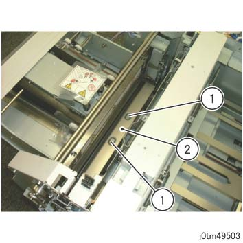
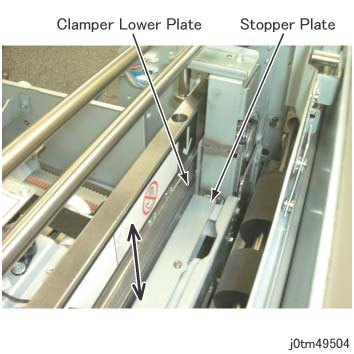
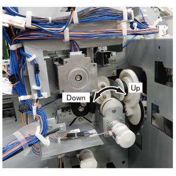
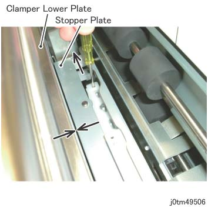
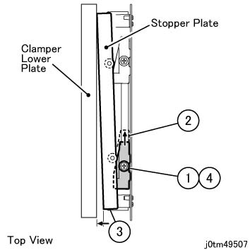
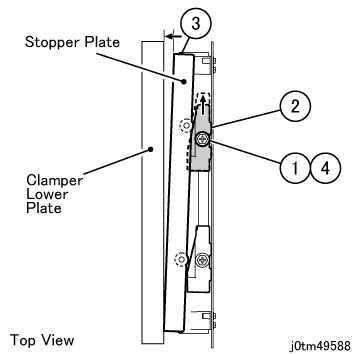

ADJ 45.26.1 Stopper 板 位置 调整 (Parallel 调整) 
参考 PL:PL 45.26
目的
Ensure 纸张 is fed properly by adjusting the 位置 的 Stopper 导轨.

当...时 turning 关闭/脱离 电源开关 的 主机, 确保 the [数据] 灯 不是 flashing.
按下 [Job 状态] to 确认 那里 是 编号 jobs in progress/waiting in the queue. 关闭电源 开关, 然后 确保 the screen 显示 关闭 和 该 [电源 Saver] is 编号 longer flashing.
关闭 the 主 电源 开关, 确认 the [主 电源] 灯 具有 turned 关闭/脱离, 和 然后 unplug 电源插头.
调整
关闭电源 开关, 和 unplug 电源插头 从 the 出口 在...之后 机器 具有 已完成 其 关机 process internally.
拆卸方背折叠裁切器的电源线支架.
拔出方背折叠裁切器的电源线.
分离方背折叠裁切器. (REP 45.1.1)
拆卸 前面 上方 盖板. (REP 45.2.1)
拆卸后盖板. (REP 45.4.1)
拆卸 顶部 左侧 盖板. (REP 45.5.2)
拆卸 Lifter 滑槽. (图 1)
拆卸螺钉（x2）.
拆卸 Lifter 滑槽.

(图 1) tm49503
移动 the 方背 折叠 门 Up 和 下 at the 位置 在哪里 the Stopper 板 的 方背 折叠 门 touches the Clamper 下方 板. (图 2)

(图 2) tm49504
To 移动 the 方背 折叠 门, 旋转 皮带 的 方背 折叠 门 移动 电机. (图 3)

(图 3) tm445504
插入 screwdriver (-) 3x50 in the Stopper 导轨 hole, 和 移动 the Stopper 导轨 in the 方向 的 arrow to make the Stopper 板 touch the Clamper 下方 板. (图 4)

(图 4) tm49506
调整 Stopper 导轨 位置.
(当...时 那里 is gap 在前面: 图 5) (当...时 那里 is gap 在后面: 图 6)
松开螺钉.
移动 the Stopper 导轨 in the 方向 的 arrow.
移动 the Stopper 板 in the 方向 的 arrow to touch the Clamper 下方 板.
拧紧螺钉.

(图 5) tm49507

(图 6) tm49588